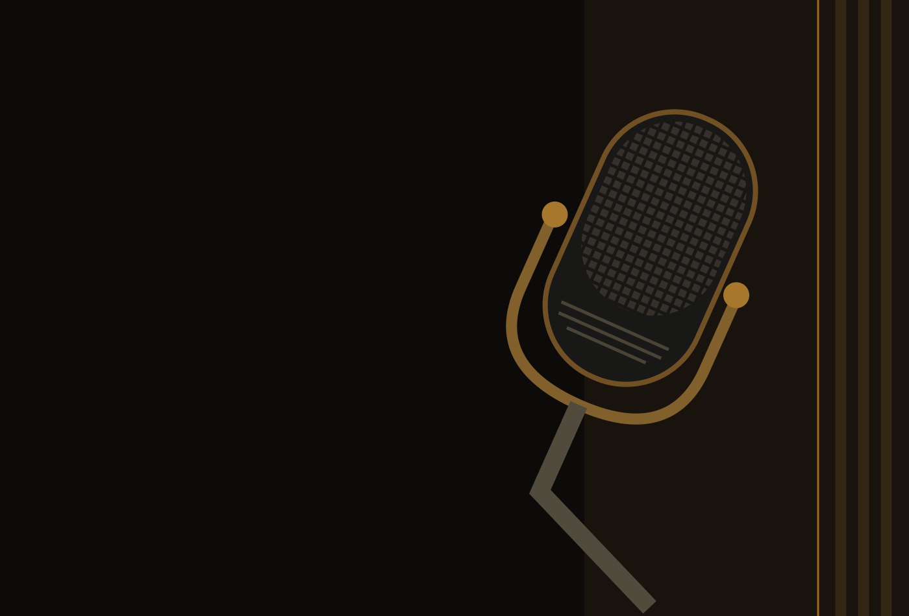

Business Growth
Revenue models, distribution channels, pricing psychology, and what actually moves the needle.

NEW EPISODE EVERY TUESDAY / CONCEPT
Weekly conversations with founders, operators, and leaders building companies that matter.
120+Example episodes
2M+Example downloads
Top 50Concept positioning
Supplied concept figures, not verified audience or chart data.
RECENT EPISODES
6 concept episodes
No matching conversations. Try “teams” or clear your search.
Titles and proposed runtimes come from the brief. Full recordings and a 120-episode archive are not provided. Each card opens original editorial notes and a short original sound ident.
THE PERSON BEHIND THE QUESTIONS
“Every episode has one goal: to leave you thinking differently.”ALEX MONROE · HOST & FOUNDER
The supplied concept introduces Alex as an adviser to founders and investors across Europe and the US. Signal is where those conversations would happen in public, with no PR teams in the room.
Fictional host biography. No real guest appearances, experience or affiliations verified.
THE EDITORIAL LENS
Revenue models, distribution channels, pricing psychology, and what actually moves the needle.
How companies hire, manage and retain people. Honest conversations about the hard parts.
The wins, the near-misses and the lessons you don't find in a pitch deck.
COMPANIES MENTIONED IN THE BRIEF / NO AFFILIATION CLAIM
Listen on your favourite platform
No verified show links supplied. Platform buttons explain availability.
SUPPLIED CONCEPT LISTENER QUOTE
“The best business podcast I've found.
Every episode is worth the time.”
@sarahvc_london · supplied attribution, not a verified social post